1) In a web browser, navigate to:
http://www.oracle.com/technetwork/java/javase/downloads/jdk8-downloads-2133151.html
2) Look at the first section, which should look like this. The number after "8u" may be different than 151 -- that is OK.
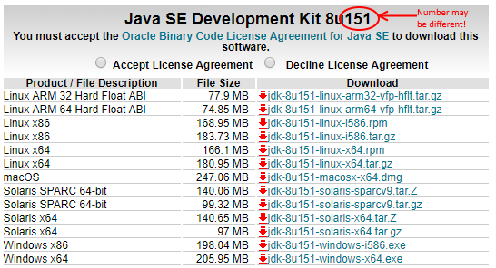
3) Next, click the Accept License Agreement button.
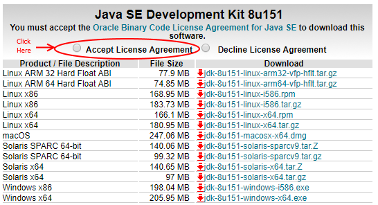
4) Click one of the last two lines, depending on if you have 32-bit Windows or 64-bit Windows.
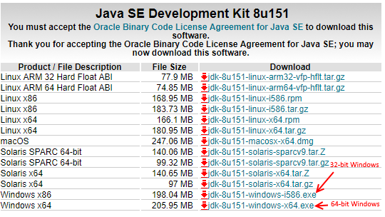
5) Once it finished downloading, click the file icon in the lower-left corner of your browser.
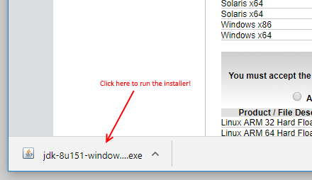
6) The JDK installer will start.
7) Click Next
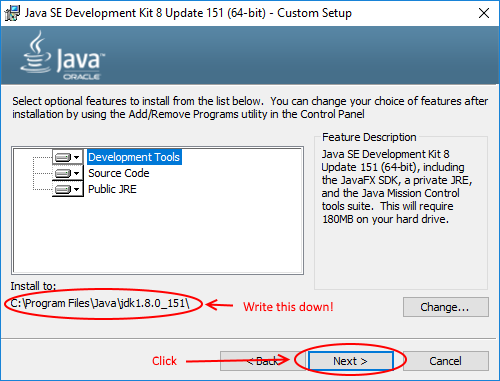
8) VERY IMPORTANT: Write down the installation directory carefully, as shown in this screen. You will need this later! Then click Next.

9) Click Next again.
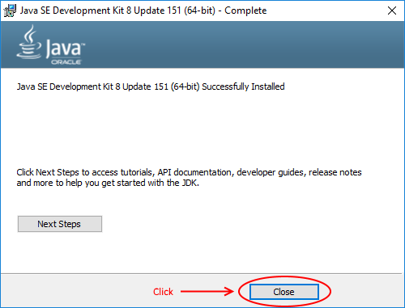
10) Click Close.
11) Once JDK installation is complete, you must also set your JAVA_HOME environment variable.
12) Open the Windows Control Panel.
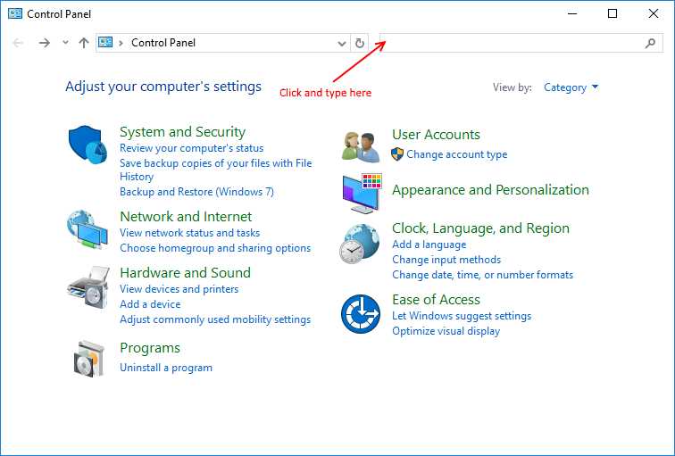
13) In the upper right corner, type environment
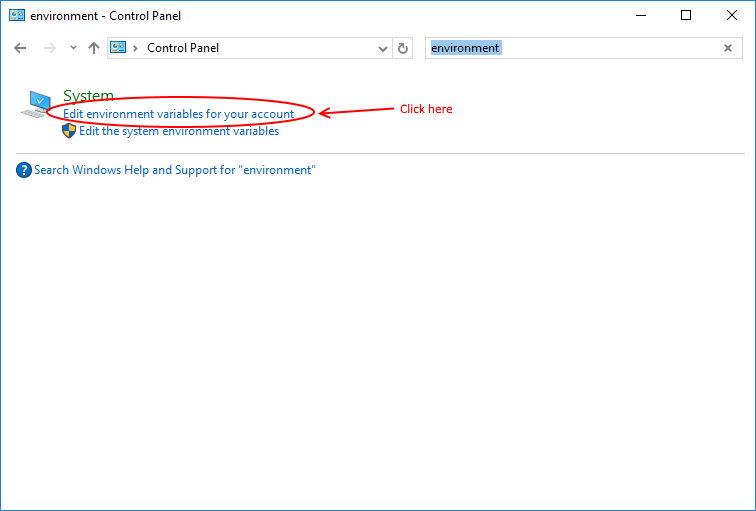
14) Click on Edit environment variables for your account
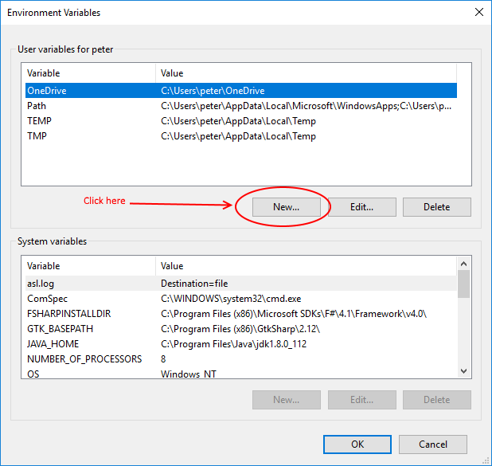
15) In the upper (User variables) section, click New...
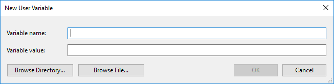
16) The "New User Variable" window should appear.
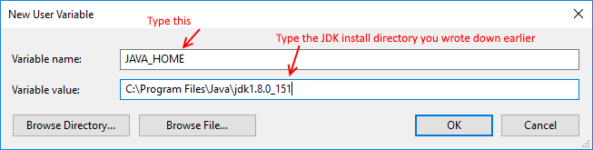
17) In the top box, type JAVA_HOME (use an underscore character between JAVA and HOME)
18) In the bottom box, type the JDK install directory you wrote down earlier. Be sure to use backward slashes, but do not type a backward slash at the very end.
19) Then press OK twice.
20) Log out or restart your computer for the changes to take effect. This is important!
21) You are DONE!